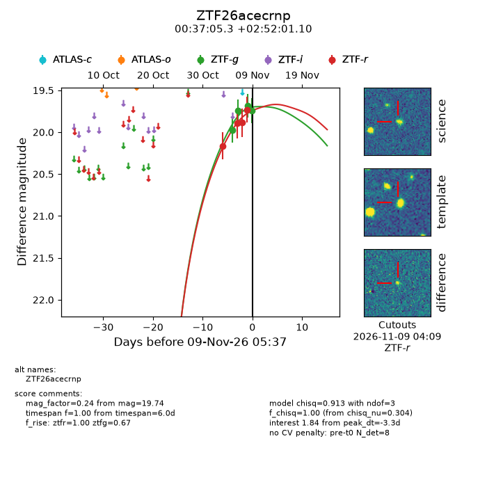
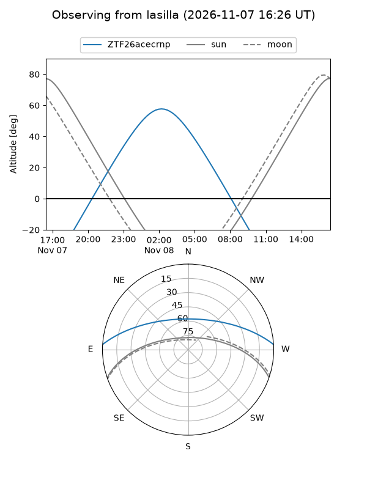
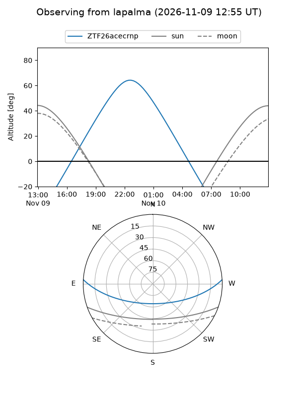
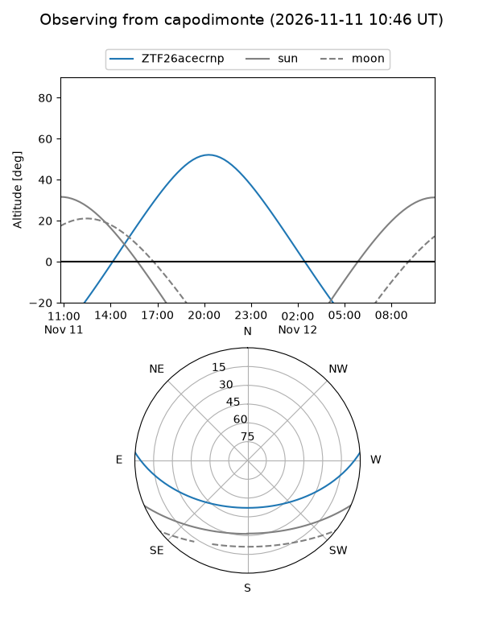
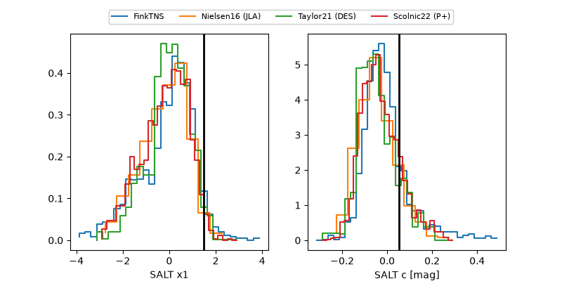

ZTF26acecrnp
Target ZTF26acecrnp at 2026-11-09 05:40
Aliases and brokers:
FINK-ZTF: ztf.fink-portal.org/ZTF26acecrnp
Lasair-ZTF: lasair-ztf.lsst.ac.uk/objects/ZTF26acecrnp
ALeRCE-ZTF: alerce.online/object/ZTF26acecrnp
Direct TNS query: direct search
alt names
ZTF26acecrnp (ztf,fink_ztf)
Coordinates:
equatorial (ra, dec) = 9.2721,+2.86697
equatorial (HMS+DMS) = 00:37:05.30,+02:52:01.10
galactic (l, b) = (115.7941,-59.80576)
Flags:
peak dt: -3.3
Photometry:
last ztfg=19.74, ztfr=19.73
4 ztfg, 4 ztfr detections
Lightcurve

Visibility



Additional plots
